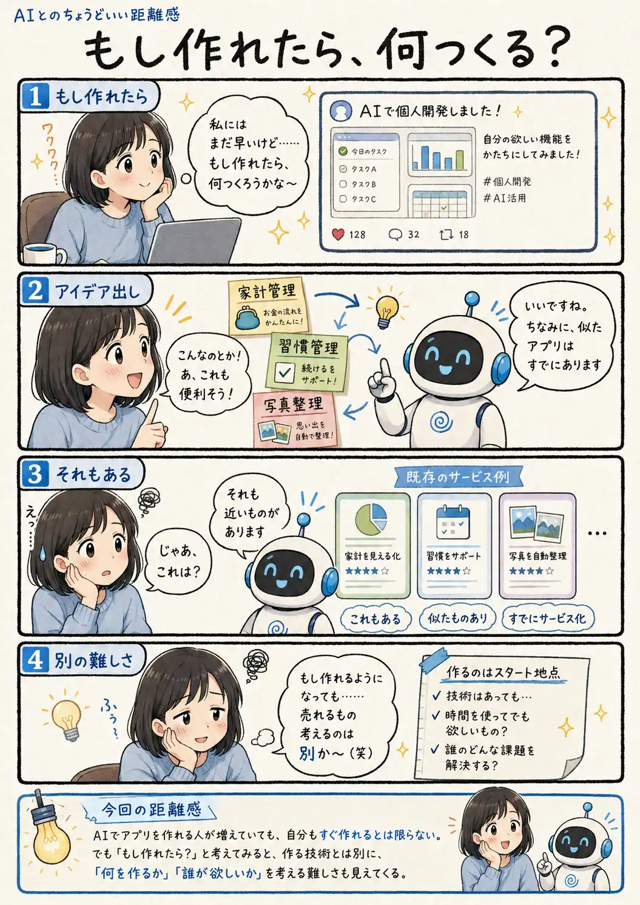

#113
もし作れたら、何つくる？
作れるのと、欲しがってもらえるのは別か〜。

メモ
AIのおかげで、以前より個人開発へ挑戦しやすくなったと感じる場面は増えました。でも、技術的に作れることと、そのアプリを誰かが欲しいと思うことは別の話です。
だからといって、最初から誰も思いついていない大発明を探す必要もありません。「自分ならここを少し変えたい」「この人には使いやすそう」と考えるところから、アイデアは育っていくのかもしれません。
今回の距離感
AIでアプリを作れる人が増えていても、自分もすぐ作れるとは限らない。でも「もし作れたら？」と考えてみると、作る技術とは別に、「何を作るか」「誰が欲しいか」を考える難しさも見えてくる。